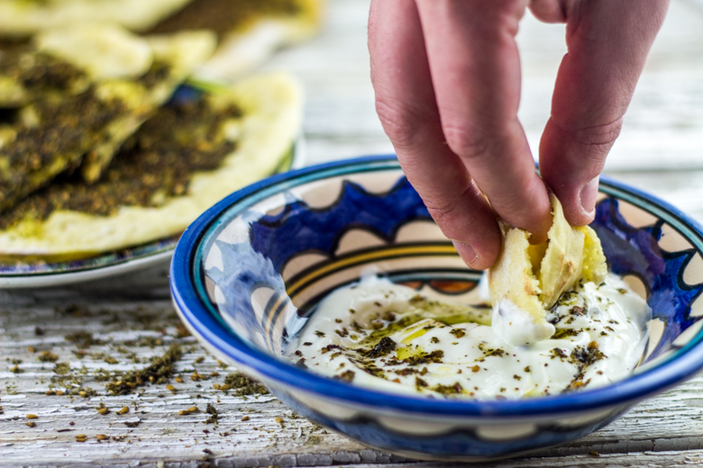

Labne : mon fromage maison pour un petit déjeuner parfait

Présentation du labne devenu pour moi un incontournable au petit déjeuner (oui oui^^) et qui fait maintenant parti de mes fromages préférés!
Labne, labneh ou encore laban, est un fromage frais préparé normalement à partir de lait de chèvre ou de brebis mais que l’on peut préparer avec de simples yaourts natures au lait de vache et c’est d’ailleurs ce qui commence à se faire de plus en plus en raison de sa grande disponibilité. Plat typique de la cuisine du Moyen-Orient et notamment de la Palestine et du Liban on trouve le labneh servi en mezzé dans les restaurant Libanais!
Le principe est simple, il s’agit de débarrasser plus ou moins le yaourt de son eau en fonction de la texture voulue.
Bref, depuis que j’ai découvert ce fromage (trop trop facile à faire, économique et super bon!) lors de mon voyage à Jérusalem rares sont les matins où il y en a pas sur la table du petit déjeuner! Servi dans une assiette puis arrosé d’huile d’olive il ne vous reste plus qu’à couper des tranches de pain pita et les tremper dedans! Habituellement le labne est salé lors de sa préparation, mais certains ne le salent pas afin de pouvoir y ajouter du miel ou quelques autres douceurs. D’autres préfèrent tout simplement le saler une fois préparé (personnellement je n’ai jamais essayé). Je préfère le labne salé, saupoudré souvent de zaatar ou encore accompagné de concombres, betteraves, tomates, olives car il n’y a rien de plus frais (mais ça c’est pour les beaux jours et pour le moment on est pas près de les revoir!!! J’ai froooooid). En ce moment je l’accompagne souvent de galettes au zaatar (appelées aussi manaïches) que l’on peut apercevoir sur la photo mais je vous réserve la recette pour un autre jour!! 😉
Depuis tout à l’heure je parle de zaatar (la première fois que j’ai entendu ce mot je me suis moi même demandé ce que pouvait bien être ce zaaaa truc^^) alors pour ceux qui ne savent pas non plus ce que c’est j’ai fait un petit article juste ici!
Revenons à notre labne et pour ceux parmi vous qui ne connaissent pas ce fromage cette recette est une invitation à la découverte et je peux vous assurer que vous ne le regretterez pas si jamais vous décidez de me suivre (parole de mouton!)!! Place maintenant à la recette!
Ingrédients
- Yaourt nature - 750g
- Sel - 1 pincée plus ou moins grosse selon vos goûts
- Huile d'olive
- Zaatar, olive, concombre, radis (facultatif)
Instructions
- Placer une passoire au dessus d'un grand saladier
- Recouvrir l’intérieur de la passoire de papier absorbant ou d'étamine si vous en avez (vous pouvez utiliser des compresses) Attention si vous utilisez des compresses stériles, pensez à les passer sous l'eau avant pour éviter qu'elles ne donnent du goût au fromage
- Verser le yaourt à l’intérieur et ajouter le sel Cette étape est facultative certains le salent après, voir pas du tout mais moi je le préfère avec un peu de sel (1/2càc)
- Remuer délicatement
- Refermer l'étamine
- Laisser "suspendre" ce mélange au dessus du saladier
- Placer au frigidaire
- Si vous laissez le mélange 12 heures (le temps d'une nuit, enfin d'une looongue nuit alors^^) vous obtiendrez un résultat assez crémeux. Au bout de 24h le labne est déjà un peu moins crémeux mais toujours très tendre et très souple à tartiner. Vous pouvez aussi le laisser plus longtemps (jusqu'à) 48h pour obtenir une texture plus ferme et en faire des petites boules que vous pourrez alors enrober de pistaches, de sésame ou encore de zaatar (très sympa pour un apéro). C'est à vous de voir!!
- Une fois le labne "terminé" vous n'avez plus qu'à le verser dans une petite assiette et l'arroser d'huile d'olive! Le "best du best" est de ne pas utiliser de couverts (comme les enfants^^) et de tremper du pain pita à l’intérieur en guise de petite cuillère!
- La conservation est de 3-4 jours au frigo dans un récipient hermétique sinon il se conserve très bien dans de l'huile d'olive.

Les tips de la communauté
Recette appréciée pour sa simplicité et sa rapidité. Les commentaires soulignent l'aspect pratique du fromage maison et son usage polyvalent. L'auteure apporte plusieurs clarifications utiles aux utilisateurs.
Astuces
- Utiliser des yaourts natures basiques pour préparer le labne
- Le labne se prépare en 12 à 48h et est très simple à faire
- Préférer le yaourt au lait entier maison pour plus de qualité
- Le zaatar s'ajoute au moment de servir en guise de garniture
- Le labne est crémeux et délicieux au petit-déjeuner salé
Variantes suggérées
- Utiliser différentes huiles d'olive de qualité pour varier les saveurs
- Ajouter diverses herbes et épices selon les goûts
- Servir avec du zaatar ou des herbes différentes selon les préférences
Ajustements signalés
- Ne pas laisser trop longtemps sinon le labne devient trop ferme et perd sa crémeosité